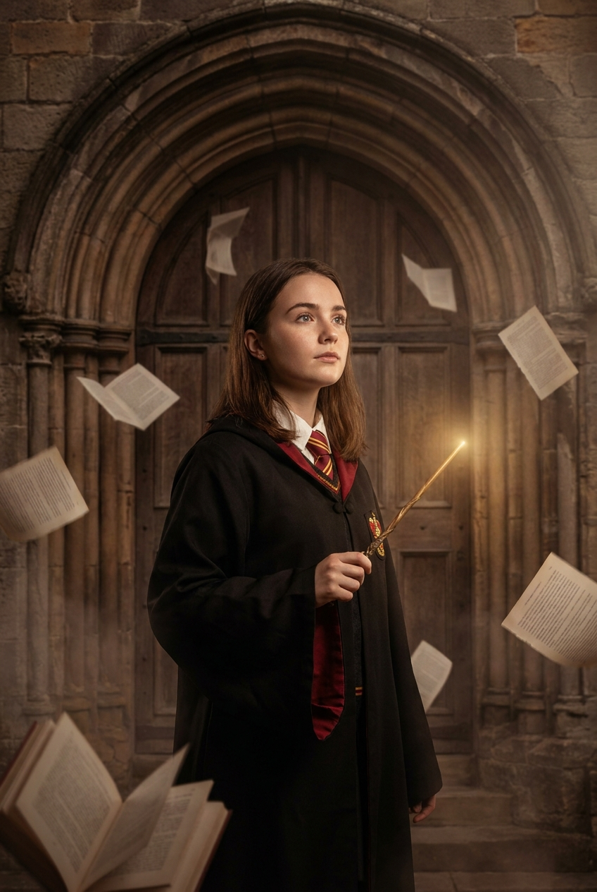
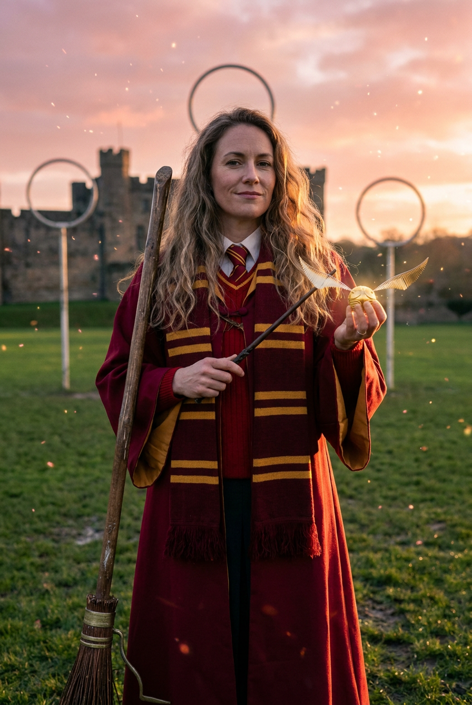
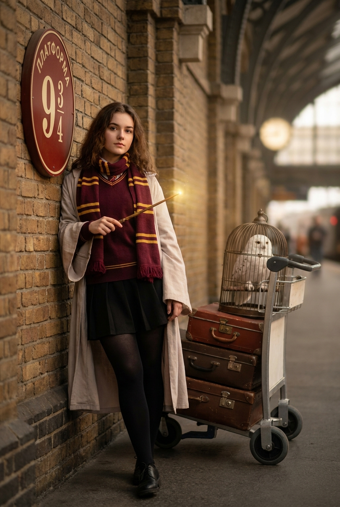
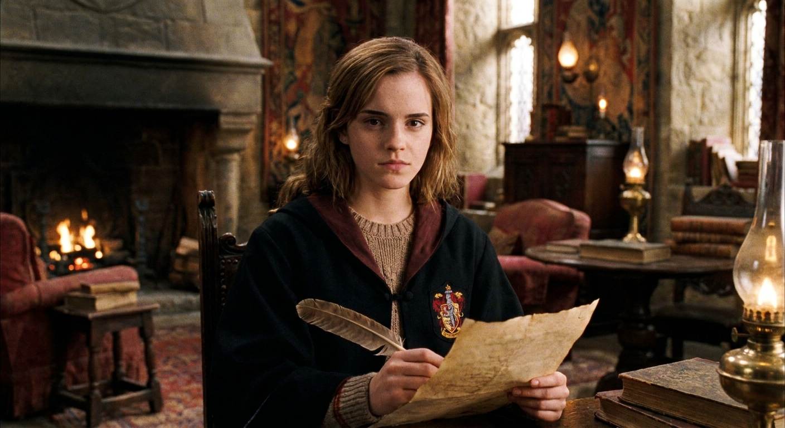
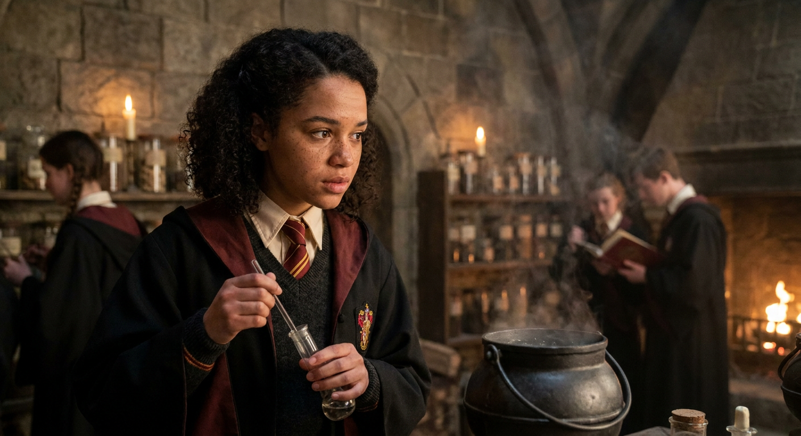
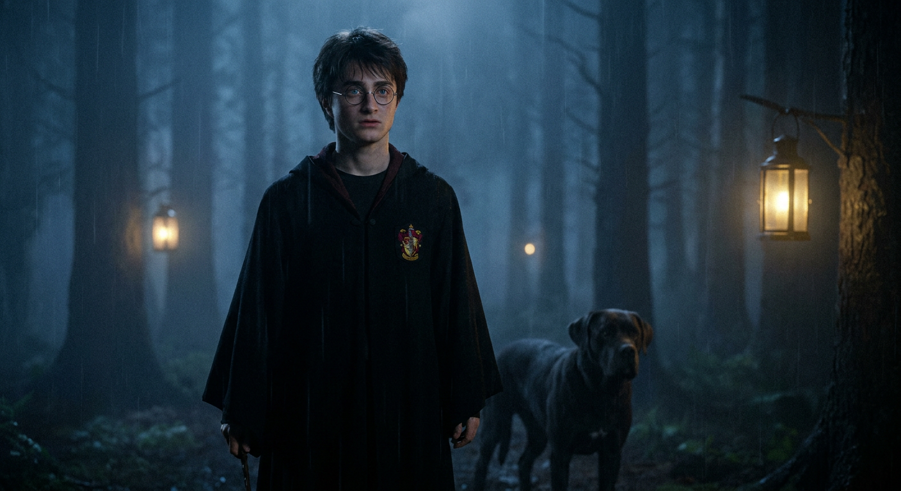
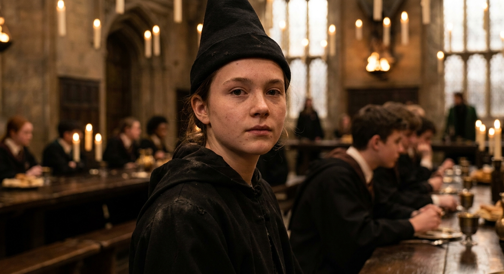
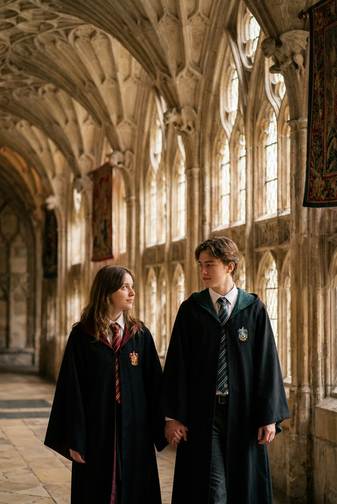
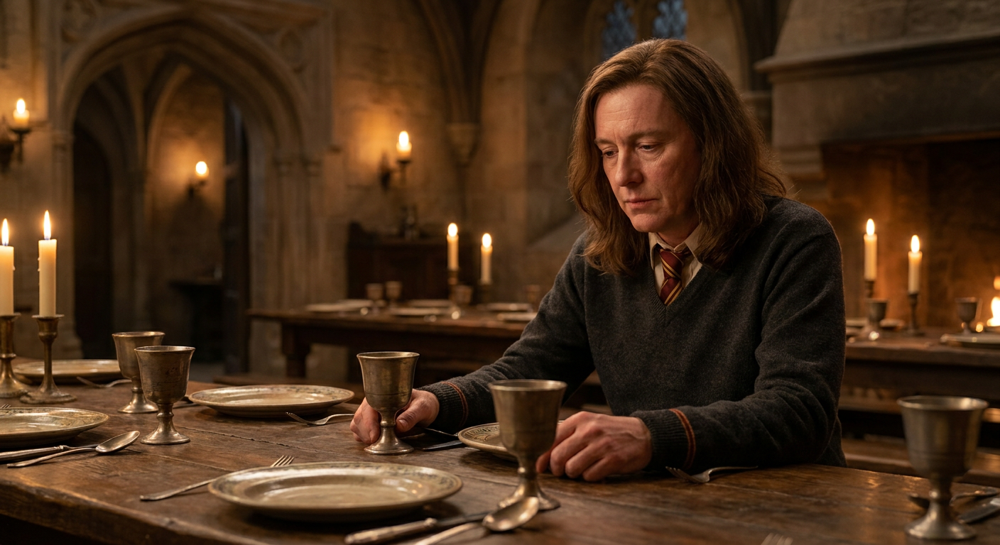
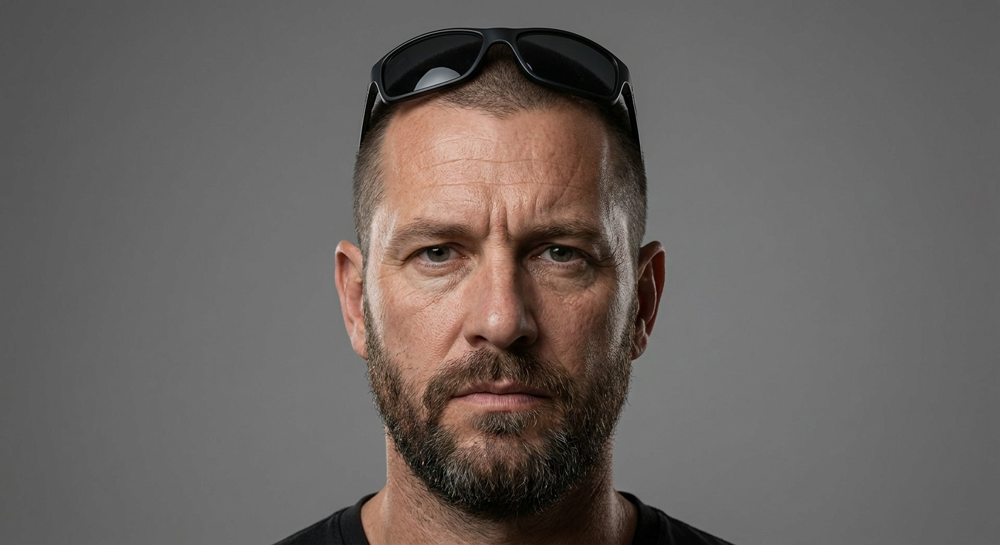

ИИ-Фото в стиле Гарри Поттера: 10 промптов для нейросети

Обычный портрет редко передаёт атмосферу Хогвартса: одежда выглядит нарядным костюмом, фон теряет глубину, а лицо становится неузнаваемым. Генерация по референсу решает эту проблему и превращает исходное фото в сцену с мантией, свечами, замком или магической платформой.
В подборке — 10 промптов для разных сюжетов: портрет волшебницы, матч по квиддичу, поезд на платформе 9¾, урок зельеварения, прогулка вдвоём и точная стилизация уже готового кадра. В каждом варианте есть указания по свету, позе, одежде, композиции и негативному промпту.
Как сгенерировать такое фото: пошагово
Нужен снимок анфас при ровном свете, лицо в кадре целиком, без тёмных очков и головных уборов. Разрешение от 1000 пикселей по короткой стороне. Чем чётче исходник, тем точнее модель повторит черты.
Выберите сценарий ниже и нажмите «Копировать» — текст уйдёт в буфер целиком, вместе с командой сохранения внешности. Эта команда стоит первой строкой и отвечает за то, чтобы на выходе было ваше лицо, а не случайное.
Кнопка «Сгенерировать» рядом с каждым промптом открывает модель в новой вкладке. Nano Banana Pro работает с референсом лица — в отличие от моделей, которые генерируют портрет с нуля и узнаваемость теряют.
Промпт — в поле ввода, портрет — через загрузку референса. Порядок значения не имеет, но без референса команда сохранения внешности работать не будет: модели нечего сохранять.
Для сторис и ленты берите 9:16, для превью и обложек — 4:3. Первый результат редко идеален: если поза или свет ушли не туда, поправьте соответствующую часть промпта и запустите заново. Обычно хватает двух-трёх итераций.
10 промптов для генерации
1. Портрет у замковой арки
Строго сохранить внешность по загруженному референсу: черты лица, пропорции, мимику и текстуру кожи без изменений. Вертикальный фотореалистичный портрет молодой девушки-волшебницы в эстетике фильма о Гарри Поттере. Она стоит перед старинной каменной аркой и тяжёлой деревянной дверью древнего замка, слегка подняв взгляд вверх; поза спокойная и естественная. На девушке чёрная академическая мантия с красно-золотой отделкой. В руке — волшебная палочка, из которой исходит мягкое золотое свечение, а вокруг беспорядочно парят страницы старых книг. Добавить лёгкий туман и драматичную мистическую атмосферу. Палитра тёплая, с коричневыми и бордовыми оттенками; кинематографичный свет подчёркивает фактуру камня, ткани и естественную текстуру кожи. Фотореализм, ultra realistic, high detail, объектив 85 мм, малая глубина резкости, мягко размытый фон. Не добавлять мультяшность, аниме, искажённое лицо, лишние пальцы, деформированные руки, плохую анатомию, мутные глаза, шум, артефакты, пересвет, текст, водяные знаки, пластмассовую кожу и лишние конечности.
2. Героиня на поле квиддича

Строго сохранить внешность по загруженному референсу: черты лица, пропорции, мимику и текстуру кожи без изменений. Создать вертикальную cinematic fantasy-фотографию взрослой девушки на зелёном поле для магической спортивной игры, в атмосфере школы Хогвартс и квиддича. Она стоит уверенно, спокойно и немного дерзко, как героиня приключенческого фильма. На ней форма для полётов: длинная спортивная мантия факультета с широкими горизонтальными полосами бордового, тёмно-красного и золотистого цветов, красный свитер, белая рубашка и галстук в той же красно-золотой гамме. Дополнить образ полосатыми гольфами или высокими носками факультетских цветов и коричневыми шнурованными ботинками. Ткань плотная, одежда реалистичная, без пластикового блеска. Сохранить индивидуальные черты лица, форму глаз, носа, губ, подбородка и линии челюсти, естественную мимику и узнаваемость. Кинематографичный дневной свет, натуральная кожа, высокая детализация, фотореализм, объектив 85 мм, малая глубина резкости. Исключить мультяшность, аниме, плохую анатомию, деформированные руки, лишние пальцы, мутные глаза, шум, артефакты, текст и водяные знаки.
3. Платформа 9¾ перед поездом

Строго сохранить внешность по загруженному референсу: черты лица, пропорции, мимику и текстуру кожи без изменений. Сделать вертикальную фотореалистичную сцену с молодой волшебницей на магической железнодорожной платформе. Девушка стоит у кирпичной стены, рядом расположен круглый красный знак «9 3/4», а возле стены находится тележка с несколькими старинными чемоданами. На тележке или рядом с ней — клетка с белой совой, сидящей сверху. На девушке бордово-красный свитер, шарф с золотыми полосами, чёрная школьная юбка, плотные чёрные колготки и лёгкая мантия. В руке она держит палочку с мягким золотистым свечением. Поза естественная, атмосфера тёплая и немного мечтательная, вокзал на заднем плане растворяется в мягком размытии. Использовать кинематографичный свет, реалистичную кожу и фактуру ткани, высокую детализацию, ultra realistic, объектив 85 мм, shallow depth of field. Не допускать мультяшного или аниме-стиля, искажённого лица, лишних пальцев, деформированных рук, неправильной анатомии, мутных глаз, низкого качества, шума, артефактов, пересвета, пластмассовой кожи, лишних конечностей и случайного текста.
4. Фото в замке Хогвартса

Превратить исходный портрет девушки в фотореалистичную фотографию в эстетике Гарри Поттера, поместив её в одну из узнаваемых локаций старинного замка магической школы. Сохранить внешность человека с референса без изменений: черты лица, возраст, текстуру кожи, длину и форму волос, естественную мимику и реальные пропорции. Не сглаживать кожу, не омолаживать и не идеализировать лицо. Подобрать атмосферную локацию с готической архитектурой, каменными стенами, высокими арками, тёплым светом факелов или свечей и лёгкой глубиной пространства. Одежда — ученическая форма Хогвартса с тёмной мантией и аккуратными деталями факультета, без современной одежды и аксессуаров. Сделать естественную позу, правдоподобную ткань, реалистичные тени и кинематографичную цветокоррекцию. Фотореализм, высокая детализация лица, натуральная кожа, без пластмассового эффекта, искажений, лишних пальцев, неправильной анатомии, современных предметов, текста и водяных знаков.
5. Урок зельеварения при свечах

Строго сохранить внешность по загруженному референсу: черты лица, пропорции, мимику и текстуру кожи без изменений. Создать фотореалистичное фото девушки на уроке зельеварения в подземном кабинете школы Хогвартс. Исходная внешность должна остаться узнаваемой и реалистичной: не менять черты лица, возраст, фактуру кожи, длину и форму волос, не омолаживать, не сглаживать и не делать лицо идеализированным. Одеть девушку как ученицу магической школы: чёрная мантия, белая рубашка, галстук факультета и строгая школьная форма. Она находится у старого деревянного стола с котлом, стеклянными колбами, банками с ингредиентами, книгами и керамической посудой. В помещении — каменные стены, полки, тёплое пламя свечей, мягкие тени и лёгкий дым от зелья. Полностью убрать современные элементы, пластик, электрические приборы и случайные логотипы. Передать натуральную текстуру ткани и кожи, кинематографичный свет, реалистичные отражения на стекле, высокую детализацию и атмосферу старого замка. Исключить мультяшность, аниме, деформированные руки, лишние пальцы, плохую анатомию, мутные глаза, текст и водяные знаки.
6. Ученик в туманном лесу

Строго сохранить внешность по загруженному референсу: черты лица, пропорции, мимику и текстуру кожи без изменений. Сделать фотореалистичный кинематографичный кадр с парнем-учеником магической школы на основе исходной сцены. Сохранить композицию один в один: тёмный лес, густой синевато-туманный свет, холодную дождливую атмосферу, фонари с мягким жёлтым свечением, ту же дистанцию до камеры и глубину резкости. Оставить в кадре собаку. Парень должен быть в длинной чёрной мантии с гербом; сохранить фактуру ткани, детали эмблемы, контур лица, направление взгляда и положение головы. Не менять позу, масштаб фигуры, исходное освещение и цветокоррекцию. Лицо должно выглядеть натурально, с реалистичной кожей и высокой детализацией, без эффекта маски. Передать настроение магической школы в духе Гарри Поттера через холодный лес, дождь, туман и старинные фонари, но не добавлять посторонние объекты. Фотореализм, cinematic light, естественные тени. Исключить изменение анатомии, формы головы, одежды, герба, положения собаки, перспективы, лишние пальцы, деформированные руки, шум, артефакты, текст и водяные знаки.
7. Ученик со шляпой

Строго сохранить внешность по загруженному референсу: черты лица, пропорции, мимику и текстуру кожи без изменений. Использовать загруженную фотографию как точную основу кадра и добавить только атмосферу магической школы в стиле Гарри Поттера. Человек остаётся в чёрной мантии и шляпе; фон, поза, выражение лица, положение тела, ракурс камеры, освещение, глубина резкости и всё окружение должны остаться без изменений. Сохранить форму головы, пропорции лица относительно шеи и плеч, положение глаз, направление взгляда и нейтральную мимику. Тон кожи подстроить под существующий тёплый свет свечей, оставив натуральную текстуру лица, мягкие тени и естественные блики. Добавить можно лишь очень деликатный магический колорит без замены локации и без новых заметных предметов. Стиль — кинематографичный реализм, natural skin, высокая детализация лица, точное совпадение света и цветокоррекции. Не менять перспективу, фон, одежду, контуры тела или масштаб объекта. Негативный промпт: новая локация, сдвиг камеры, другая поза, изменение выражения лица, омоложение, сглаженная кожа, искажённые пропорции, лишние пальцы, деформированные руки, мультяшность, текст и водяные знаки.
8. Пара в готическом коридоре

Строго сохранить внешность по загруженному референсу: черты лица, пропорции, мимику и текстуру кожи без изменений. Создать вертикальную фотореалистичную фотографию двух молодых людей — мужчины и женщины, которые идут рядом и держатся за руки в длинном готическом каменном коридоре. Пространство магической школы оформлено высокими арками и сводами, на заднем плане мягкий естественный свет и лёгкое размытие. Оба героя одеты в чёрные академические мантии с цветной подкладкой, белые рубашки и галстуки факультетских цветов; на мантиях заметны гербы. Сохранить лица людей с референсных фотографий, естественные эмоции, реальные пропорции и узнаваемые черты. Поза должна выглядеть непринуждённой: они идут в одном темпе, руки соединены, взгляд и мимика естественные. Передать тёплую атмосферу старого замка через мягкую цветокоррекцию, детализированную архитектуру и правдоподобную фактуру ткани. Фотореализм, ultra realistic, объектив 85 мм, малая глубина резкости, кинематографичная композиция. Исключить мультяшность, аниме, искажённые лица, лишние пальцы, деформированные руки, неправильную анатомию, мутные глаза, низкое качество, шум, артефакты, пересвет, текст и водяные знаки.
9. Сцена за столом факультета

Строго сохранить внешность по загруженному референсу: черты лица, пропорции, мимику и текстуру кожи без изменений. Взять референсную фотографию и воспроизвести сцену в магической школе без изменений композиции. Оставить один в один фон с арками и задним планом, тёплый свет свечей, исходную цветокоррекцию, стол, посуду, положение рук, позу, наклон головы и выражение лица с направленным вниз взглядом. Одежда остаётся прежней: серый свитер, галстук в полоску и остальные детали школьной формы. Добавить только узнаваемый Hogwarts vibe и фотореалистичную атмосферу старинного замка, не перестраивая окружение. Исправить лишь возможные технические ошибки генерации: сделать пропорции головы естественными, сохранить правильное соотношение лица с шеей и плечами, выровнять направление взгляда и мимику, оставить натуральную текстуру кожи, тёплые блики и мягкие тени. Кинематографичный реализм, высокая детализация лица, точное совпадение освещения и цветокоррекции. Не менять локацию, перспективу, позу, фон, стол, посуду, одежду и выражение лица. Исключить деформированные руки, лишние пальцы, неестественную анатомию, пластмассовую кожу, шум, текст и водяные знаки.
10. Магическая версия исходного кадра

Строго сохранить внешность по загруженному референсу: черты лица, пропорции, мимику и текстуру кожи без изменений. Использовать загруженное изображение как главный визуальный референс и превратить его в фотореалистичный кадр с атмосферой магической школы в стиле Гарри Поттера. Сохранить человека, его лицо, возраст, волосы, одежду, позу, выражение, положение головы, масштаб в кадре, ракурс камеры, фон, освещение и глубину резкости. Не менять исходную композицию и не добавлять современные детали. Магический эффект должен быть деликатным: старинная атмосфера, кинематографичная цветокоррекция, ощущение замка и учебной сцены, натуральные тени и правдоподобная фактура материалов. Лицо не ретушировать чрезмерно: сохранить текстуру кожи, индивидуальные черты, естественные пропорции головы, шеи и плеч. Изображение должно выглядеть как настоящая фотография, снятая объективом 85 мм при мягком рассеянном свете, с высокой детализацией и аккуратным размытием фона. Не заменять локацию, не сдвигать перспективу, не менять позу и одежду. Исключить мультяшность, аниме, искажения лица, лишние пальцы, деформированные руки, плохую анатомию, артефакты, шум, текст и водяные знаки.
Что важно учесть в этом стиле
Магический кадр держится не на одной мантии. Нужны старые материалы, тёплый свет свечей, глубокие тени, камень, дерево, металл и лёгкая дымка. Если в сцене есть палочка, свечение лучше задавать мягким и локальным, иначе лицо и руки будут пересвечены.
Для портретов подойдёт объектив 85 мм и малая глубина резкости: герой останется резким, а замок или вокзал уйдут в фон. Для групповых сцен полезно отдельно описывать положение рук, дистанцию между людьми и направление взгляда — это снижает число анатомических ошибок.
Идеи для вариаций
- Письмо с сургучной печатью и сова на подоконнике.
- Ночная библиотека с лестницами, свечами и раскрытой книгой.
- Занятие по защите от тёмных искусств в заброшенном кабинете.
- Зимний двор замка с инеем на каменных стенах.
- Портрет у факультетского знамени с цветным контровым светом.
- Лодка на тёмном озере перед прибытием к замку.
Как собрать свой промпт
Сначала опишите героя и тип кадра: портрет по пояс, полный рост или сцена с несколькими людьми. Затем добавьте локацию, одежду, действие и настроение. После этого задайте источник света, палитру, объектив и глубину резкости. В конце укажите, какие черты референса и элементы композиции нельзя менять.
Негативный промпт лучше делать конкретным: отдельно перечислите ошибки лица, рук, анатомии, фона и лишние надписи. Если результат слишком сильно меняет исходное фото, сократите число новых деталей и повторите генерацию 2–4 раза с тем же референсом.
Ошибки, из-за которых кадр не получается
- Слишком много эффектов. Яркая магия, дым, искры и свечения одновременно перегружают сцену и скрывают лицо.
- Нет указаний по композиции. Без позы, ракурса и дистанции модель может изменить положение тела и масштаб героя.
- Общие слова вместо деталей. Формулировка «красивая форма» слабее, чем описание мантии, рубашки, галстука, герба и фактуры ткани.
- Игнорирование рук. Для палочки, рукопожатия и жестов нужно отдельно задать положение кистей и количество пальцев.
- Противоречивые требования. Если просить одновременно сохранить фон и заменить локацию, нейросеть выберет случайный вариант.
Частые вопросы
Как сделать такое ИИ-фото бесплатно?
Попробуйте Kandinsky или Шедеврум: они подходят для генерации сцен по тексту, но точное сохранение лица по референсу может быть нестабильным. Krea AI и Arena.ai удобны для экспериментов и иногда дают более гибкий контроль, однако бесплатный доступ, очередь и набор функций меняются. Для узнаваемого результата используйте чёткое фото без сильных теней и запускайте несколько вариантов.
Как сохранить лицо на сгенерированном фото?
Загрузите портрет с хорошо видимыми глазами и контуром лица, а в промпте укажите, что нужно сохранить возраст, волосы, текстуру кожи и индивидуальные черты. Не перегружайте сцену новыми деталями. Если сервис поддерживает силу референса, начните со среднего значения и сделайте 2–4 итерации.
Почему нейросеть меняет руки и пальцы?
Кисти сложнее всего для генерации, особенно когда человек держит палочку или другого героя за руку. Опишите положение рук отдельно, добавьте в негативный промпт лишние пальцы и деформированные кисти, а затем выберите кадр с наименее сложным жестом.
Можно ли сделать фото пары в одной сцене?
Да. Лучше загрузить два отдельных референса и явно указать, кто находится слева и справа, как люди стоят, куда смотрят и что делают руками. Для сохранения узнаваемости не меняйте одновременно лица, позу, одежду и фон — сначала добейтесь правильной композиции, затем добавляйте магические детали.